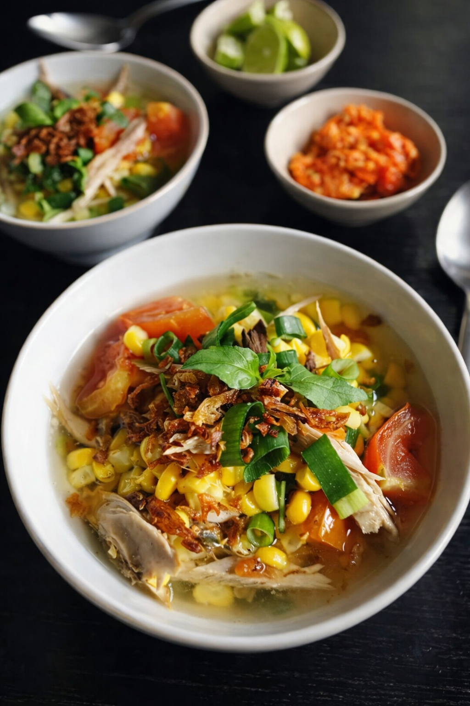
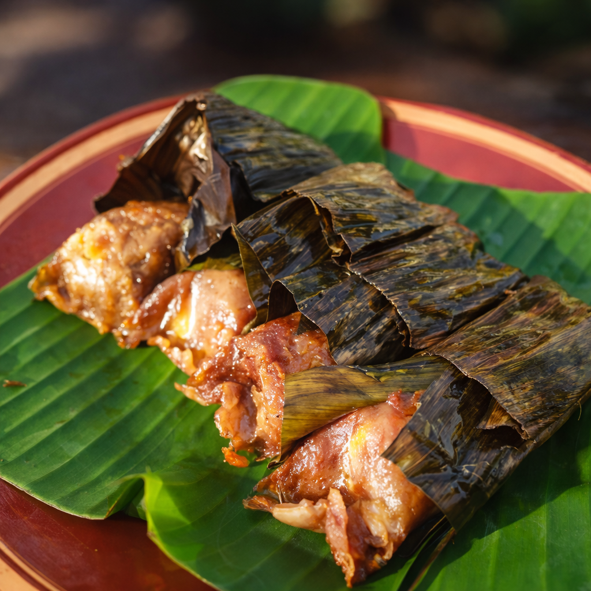
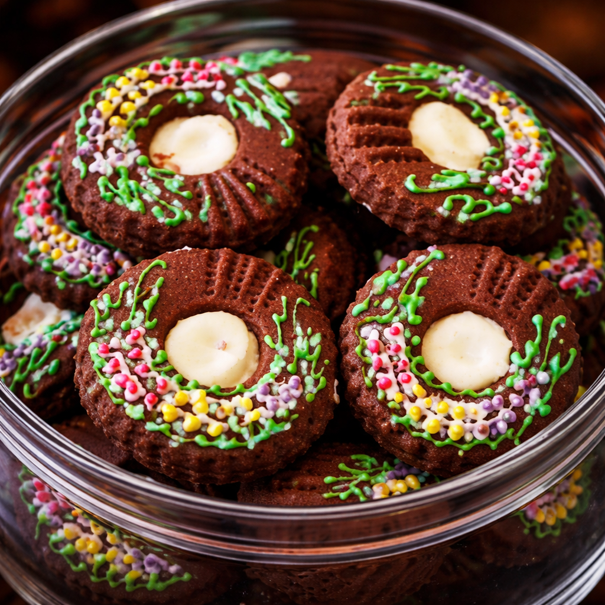
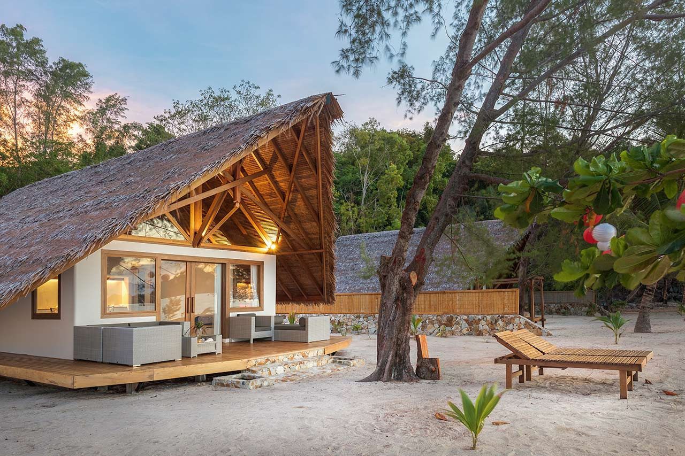
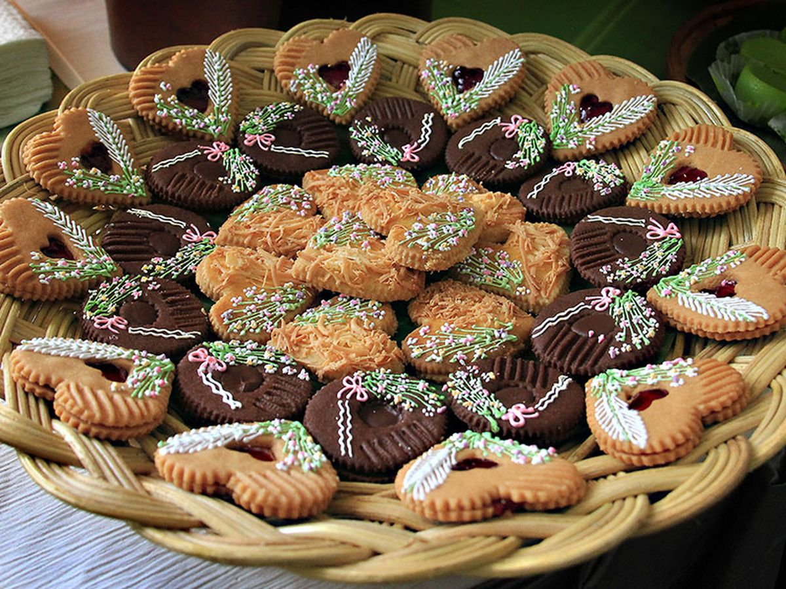
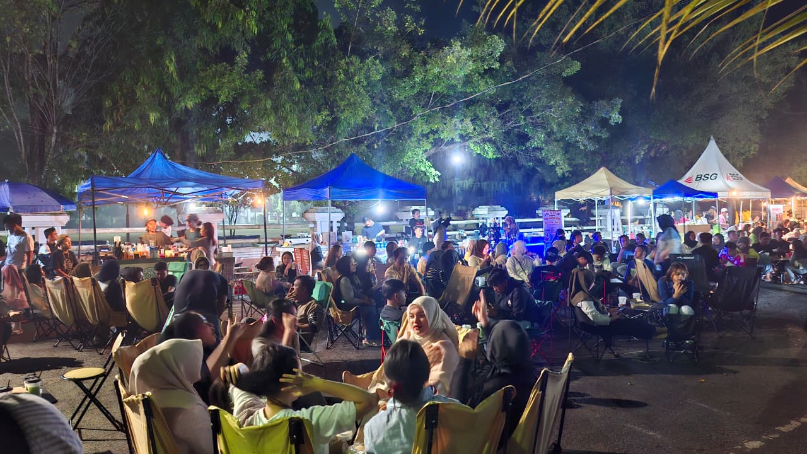
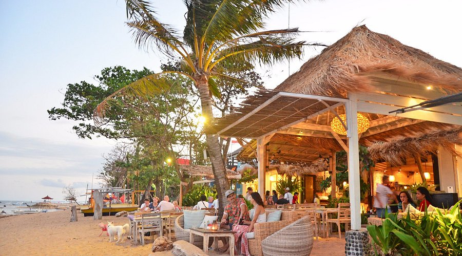

Discover authentic dishes, hidden food gems, and unforgettable culinary experiences.

Jagung, Udang, Kelapa, Kemangi
Sup jagung khas Gorontalo yang menyegarkan dengan perpaduan rasa manis, asam, dan pedas.

Sagu, Hati Ayam, Rempah-rempah
Makanan legendaris simbol perdamaian, dibungkus daun pisang dan dibakar dengan aroma khas.

Tepung, Mentega, Seni Lukis Gula
Kue kering dengan detail lukisan tangan yang rumit, merepresentasikan seni sulam Karawo.

Nikmati hidangan laut segar khas pesisir utara dengan pemandangan laut yang memukau.

Pengalaman fine dining eksklusif dengan sentuhan rempah warisan budaya Gorontalo.

Pusat jajanan malam legendaris untuk mencicipi hidangan autentik dengan harga bersahabat.

Spesialis ikan bakar segar dan Binte Biluhuta langsung dari tangkapan nelayan lokal.
Culinary Spots
Local Recipes
Fresh Seafood Daily
Authentic Taste %